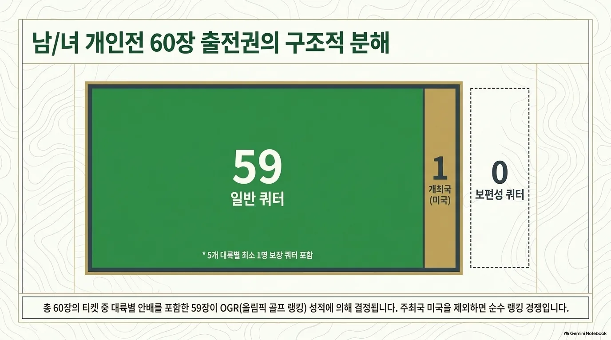
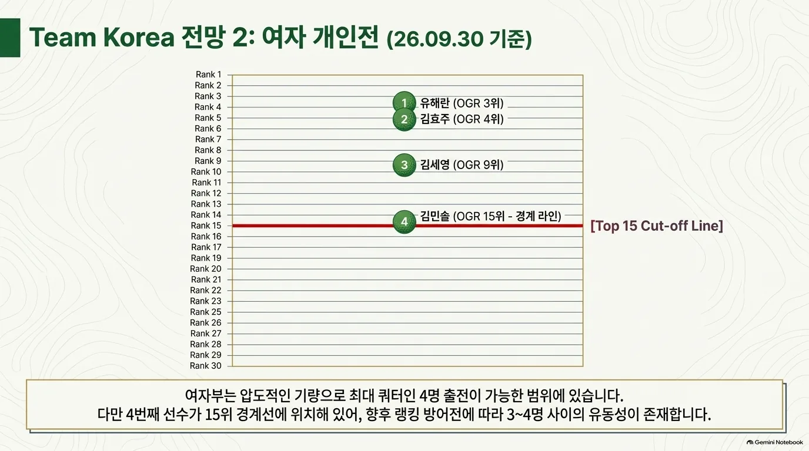

골프 · 여자 개인
예선 규정
선발 경로
여자 개인 · 스트로크플레이
여자 개인 선발 경로
60명 · 최종 OGR 기준일 2028.06.05 · IGF 공식 OGR ↗
| 경로 | 쿼터 | 선발 방식 |
|---|---|---|
| (규정 D.1) OGR 15위 이내 | 우선 선발 | [1] |
| (규정 D.1) OGR 16위 이하 | 일반쿼터 잔여 | [2] |
| (규정 D.1) 대륙 쿼터 | 일반쿼터에 포함 | [3] |
| (규정 D.3) 개최국쿼터 | 1명 | [4] |
- [1]2028.06.05 최종 OGR 기준으로 15위 이내 선수를 우선 선발한다. 국가 올림픽위원회(NOC)당 같은 성별 최대 4명이다.
- [2]16위부터 순서대로 선발하되, 15위 이내 선수를 포함하여 국가 올림픽위원회(NOC)당 같은 성별 최대 2명까지다. 이미 2명 이상을 확보한 경우 이 경로로 추가할 수 없다. 대륙 쿼터를 포함해 일반쿼터 59명을 채운다.
- [3]자동 선발된 대표가 없는 올림픽 운동의 5개 대륙에 각 최소 1명을 보장한다. 해당 대륙의 OGR 최상위 적격 선수에게 배정하며, 59명에 포함된다.
- [4]미국이 해당 성별 OGR 경로로 선수를 확보하지 못하면 개최국쿼터 1명을 적용한다. 필요 없는 개최국쿼터는 국가별 상한을 지키면서 OGR의 다음 적격 선수에게 돌아간다.

성별 60장 구성 — 일반 59 · 개최국 1 · 보편성 0 · 자료 정리 슬라이드
쿼터 획득 현황
| NOC | 선수 | 획득 경로 | 일자 |
|---|
주요 대회 결과
대회 결과
| 대회 | 1위 | 2위 | 3위 |
|---|---|---|---|
| 2025 셰브론 챔피언십 | Saigo(일본) | 미수록 | 미수록 |
| 2025 US 여자 오픈 | Stark(SWE) | 미수록 | 미수록 |
| 2025 KPMG 여자 PGA 챔피언십 | Lee(AUS) | 미수록 | 미수록 |
| 2025 에비앙 챔피언십 | Kim(AUS) | 미수록 | 미수록 |
| 2025 AIG 여자 오픈 | Yamashita(일본) | 미수록 | 미수록 |
| 2026 셰브론 챔피언십 | Korda(미국) | 미수록 | 미수록 |
| 2026 US 여자 오픈 | Korda(미국) | 미수록 | 미수록 |
| 2026 KPMG 여자 PGA 챔피언십 | 류해란(한국) | 미수록 | 미수록 |
| 2026 에비앙 챔피언십 | 류해란(한국) | 미수록 | 미수록 |
| 2026 AIG 여자 오픈 | Kuwaki(일본) | Henseleit(독일) | 미수록 |
동메달·준결승 진출자가 둘이면 같은 칸 안에서 구분합니다. 미수록은 결과를 확인하지 못한 항목입니다.
주목 선수
한국 출전 전망
2026-09-30 기준 참고현재 랭킹을 LA28 규정에 단순 적용한 참고치이며 2028 확정 전망이 아님.
남자 약 2명 · 여자 3~4명 가능 범위
남자는 국가별 일반 상한 2명을 중심으로 본다. 여자 세계랭킹의 현재 수치만 적용하면 4명이며, 네 번째 선수가 15위 경계에 있어 3~4명 범위로 설명한다. 이는 통계적 예측 구간이나 최소 인원 보장이 아니다.
| 선수 | 공개 순위 | 근거 |
|---|---|---|
| 김시우 | OGR 9위 / OWGR 14위 | IGF · 2026.09.28 |
| 김주형 | OGR 17위 / OWGR 32위 | IGF · 2026.09.28 |
| 유해란 | OGR 3위 / WWGR 3위 | IGF · 2026.09.28 |
| 김효주 | OGR 4위 / WWGR 4위 | IGF · 2026.09.28 |
| 김세영 | OGR 9위 / WWGR 9위 | IGF · 2026.09.28 |
| 김민솔 | OGR 15위 / WWGR 15위 | IGF · 2026.09.28 |
남자: IGF가 연결하는 공식 랭킹 트래커의 2026.09.28 남자 60명 명단에는 김시우(9위)·김주형(17위), 한국 선수 2명이 표시된다. 김시우의 15위 이내 진입만으로 한국의 상한이 자동으로 4명이 되지는 않는다. 세 번째·네 번째 선수가 추가되려면 각각 15위 이내 조건이 필요하므로 약 2명을 참고 범위로 둔다. 트래커의 OGR 순번과 OWGR 세계순위는 서로 다르며, 이 명단은 2028년 확정 대표 명단이 아니다.
여자: 9월 28일 WWGR 및 IGF 여자 트래커에는 한국 선수 4명이 15위 이내에 있다. 현재 수치의 단순 적용 결과는 4명이다. 네 번째 선수의 순위가 16위 이하로 바뀌고 나머지 3명이 15위 안에 남는 경우에는 3명이 된다.
혼성: 남녀 개인전 출전자를 모두 확보하고 OMTR 선발 요건을 충족해야 1팀을 구성할 수 있다. 개인전 참가 가능 인원을 혼성 출전 확정으로 해석하지 않는다.

여자 한국 선수 OGR 위치 (2026.09.28 IGF 순위) · 자료 정리 슬라이드
자료 기준: 2026.09.30 이전 최신 주간 자료인 2026.09.28 IGF 남녀 트래커와 WWGR 여자 주간표를 사용했다. OGR은 현재 선발 참고 순번, OWGR/WWGR은 세계순위로 구분했다. 현재 명단을 2028년 최종 선발 결과로 해석하지 않는다. 2028년 최종 랭킹·참가 자격·쿼터 수락에 따라 달라질 수 있다.
골프 · 올림픽예선 | 규정 확인 2026.10.01 · 한국 전망 기준 2026.09.30
각주
외부 링크
공식 근거
- IGF · LA28 Qualification System (PDF, 문서 표기 2026.01.31) — B~G
- IGF · 남자 공식 Olympic Golf Ranking
- IGF · 여자 공식 Olympic Golf Ranking
- IGF 홈페이지가 연결하는 Qualification Insights
- IGF · 예선 개시 및 OMTR 공식 설명 (2026.06.09)
- OWGR · 남자 세계랭킹
- Rolex Rankings · 여자 세계랭킹
- LPGA · 여자 세계랭킹 주간 아카이브
규정 확인일: 2026.10.01. IGF 공식 OGR 페이지가 직접 연결하는 PDF를 기준으로 정리했다. 기존 골프 페이지의 2026.05.12 표기는 해당 PDF에서 확인되지 않아 사용하지 않았다. 본 문서는 비공식 한국어 요약이며 최종 적용은 IGF 공지를 따른다.